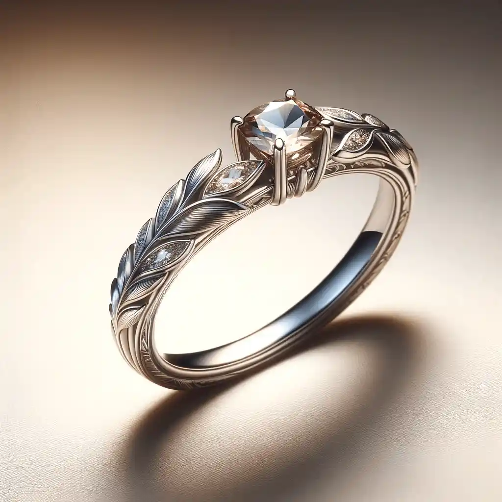
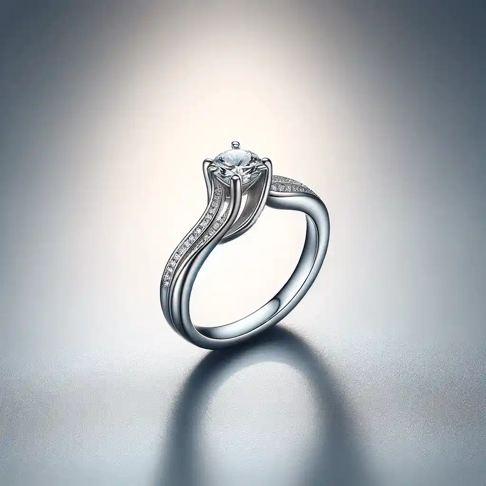
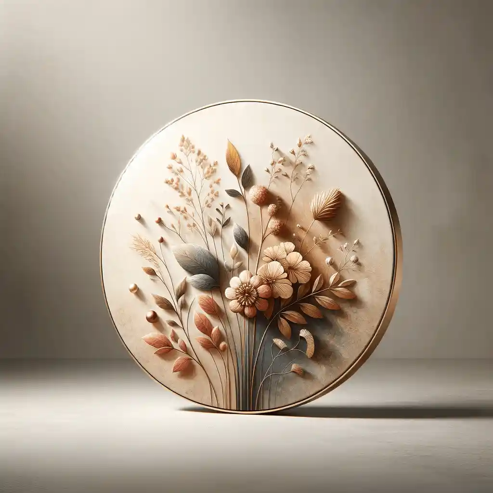

Nauka
Dlaczego niebo jest niebieskie
Rozpraszanie Rayleigha tłumaczy zarówno błękit południa, jak i czerwień zachodu.

Pełne archiwum tekstów CuriositiesMagazine. Zawęź listę do interesującego Cię działu.
Nauka
Rozpraszanie Rayleigha tłumaczy zarówno błękit południa, jak i czerwień zachodu.
Nauka
Kumulus średniej wielkości niesie kilkaset ton wody i mimo to nie spada.
Nauka
Efekt Mpemby budzi spory od lat sześćdziesiątych. Co dziś da się obronić.
Nauka
Petrichor to mieszanka olejków roślinnych i geosminy uwalnianej przez glebę.

Nauka
Szyby w starych kościołach są grubsze u dołu — ale nie z powodu spływania.

Nauka
Paradoks Olbersa i to, co mówi nam o wieku oraz rozszerzaniu wszechświata.
Historia
Popiół wulkaniczny i woda morska dały materiał naprawiający własne pęknięcia.

Historia
Zbiory znikały stopniowo przez stulecia, a nie w jednej nocy.
Historia
Klepsydry, świece i zegary wodne — i dlaczego godziny bywały nierówne.
Historia
Ruchoma czcionka istniała w Korei i Chinach na długo przed Gutenbergiem.

Historia
Pięć dni mgły w 1952 roku zmieniło europejskie prawo o czystości powietrza.

Historia
Białe marmury muzeów były niegdyś pomalowane jaskrawymi pigmentami.
Natura
Strzępki mikoryzowe oplatają korzenie i przenoszą węgiel oraz azot.

Natura
Trasa z Arktyki na Antarktydę i z powrotem to około 70 tysięcy kilometrów rocznie.
Natura
Rozkład chlorofilu odsłania karotenoidy, które w liściu były przez cały rok.
Natura
Sosna oścista z Gór Białych ma ponad 4800 lat i wciąż wypuszcza igły.
Natura
Echolokacja pozwala odróżnić ćmę od kropli deszczu w całkowitej ciemności.
Natura
Ponad trzy czwarte organizmów głębinowych wytwarza własne światło.